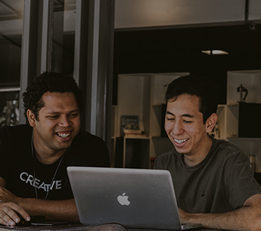
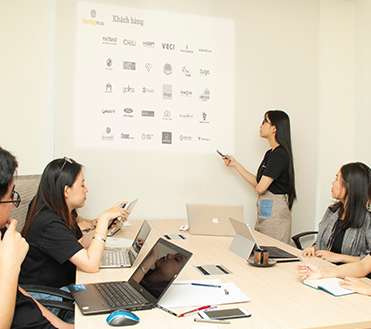
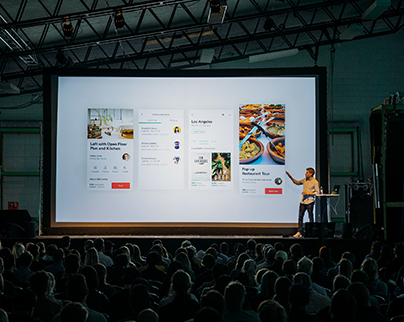
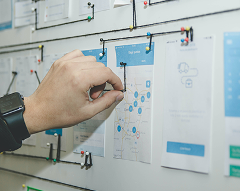

Proactive HR
인사개요
한국타이어앤테크놀로지는 임직원의 성장이 곧 회사의 성장이라는 믿음으로, 구성원의 발전을 전폭적으로 지원하고 있습니다.
-
- 01Culture Driven HR
- 구성원의 일하는 방식의 변화와 기업문화 정착을 위한 HR의 혁신을 추구함
자기 몰입형(Self Modivated) 인재를 확보 및 육성함
-
- 02Agile & Flexible HR
- 기존 방식과 관행에 매몰되지 않고, 경영환경 변화함
임직원의 Needs에 유연하고 민첩하게 대응함
-
- 03Performance & Innovation HR
- 연공(Seniority)적 요소를 배제하고, 성과, 역량 중심의 발탁 인사를 정착함
보상제도
핵심가치를 기반으로 일하는 방식의 변화를 꾀하고, 유연하고 민첩한 HR시스템을
통해
임직원이 도전적인 목표를 향해 나아갈 수 있도록 합니다.
-
- Proactive Worker
- 유연한 업무수행 환경 아래에서 일하는 인재
-
- Achievement
- 혁신적 모습으로 목표를 달성하는 인재를 대상
-
- Role Model
- 빠른 성장기회를 제공하며 롤모델로 인정
-
- Reward
- 공헌한 바에 합당한 유의미한 보상을 제공
인사제도
한국타이어앤테크놀로지는 연공서열 파괴, 몰입형 인재 육성, HR운영의 민첩성과 유연성 강화 등을 추구하며, 직급, 호칭, 승격, 평가 등 기존 인사제도 전반을 개편하여 구성원이 두려움 없이 도전하고 마음껏 역량을 펼칠 수 있도록 지원합니다.
-

- 직급, 호칭 체계모든 임직원은 ‘님’으로 호칭을 통일합니다.
- 직급 단계를 축소하여 사원의 능력에 따라 보다 빨리 관리자가 될 수 있는 환경을 만들고, 직급의 의미를 서열 관계가 아닌 역할에 대한 차이로 변경하여 직급에 대한 수직적인 인식을 전환할 수 있는 기틀을 마련했습니다. 또한 직급이 개편됨에 따라 연공서열적 의미가 담긴 호칭을 폐지하고, 모든 임직원이 서로를 ‘님’이라 칭하도록 했습니다.
-
- 평가,보상 체계‘무엇을 어떻게 달성’하였는가를 종합적으로 평가하여 우수한 인재에게 확실히 보상
- 한국타이어앤테크놀로지는 계량적 목표 달성이나, 지시한 것을 그대로 잘 이행하였는지 등의 여부를 평가하는 것이 아니라, 구성원이 스스로 도전적 목표를 설정하고 목표달성 여부만큼이나 그 과정이 도전적이고 혁신적이었는지를 평가에 주요하게 반영합니다.
-

- 발탁형 승격 체계능력이 검증되면 신입사원의 경우, 입사 후 8년 만에 임원이 될 수 있습니다.
- 연차에 의한 승격 관행을 없애고, 우수 사원을 과감하게 선발하는 기반을 마련함으로써, 구성원들은 자기 주도적인 역량 개발과 역할 수행에 보다 집중하여 직급과 나이에 상관없이 누구나 혁신을 위해 도전하는 주인공이 될 수 있습니다.
교육제도
내가 가야 할 길의 지도를 먼저 그릴 수 있도록 스스로를 돌아보게 합니다. 한국타이어엔테크놀로지는 모든 구성원이 전문능력을 갖춘 Proactive Leader로 성장할 수 있도록 체계화된 교육을 제공합니다.
-

Proactive Leader 성장의 첫 걸음,
신입사원 교육 프로그램한국타이어앤테크놀로지에 입사한 신입사원들은 입사 후 가장 먼저 받게 되는 신입사원 교육을 통해 Proactive Leader로의 성장에 필요한 첫 걸음을 내딛게 됩니다. 총 3개월 과정으로 진행되는 프로그램을 통해 신입사원은 회사의 비전과 목표를 익히고 공유하게 됩니다.
-

핵심 연구개발 역량을 배양하는 Competency Map
한국타이어앤테크놀로지가 Leading Global Tire Company로서 도약하는 기틀은 지속적인 핵심 연구능력 개발에서 다져집니다. 한국타이어앤테크놀로지가 운용하는 Competency Map은 연구와 재료, 개발 등 총 225개로 구성한 직무 별 필요지식과 역량을 정의하고, 이를 수준별로 진단하는 체계입니다.
-
자발적이고 능동적인 Proactive Leader를 양성하는 학습계약제
한국타이어앤테크놀로지는 구성원 각자가 체계적으로 역량을 계발할 수 있도록 학습계약제를 시행합니다. 학습계약제는 매년 구성원 스스로 자신의 역량을 진단하고, 부족한 부분을 향상시킬 수 있도록 자발적으로 교육계획을 세우고 실천하는 제도입니다. 구성원은 자신이 정한 계획 성취 여부를 부서장과 약속하고 일정에 따라 자율적으로 학습을 이행하고 실천합니다.